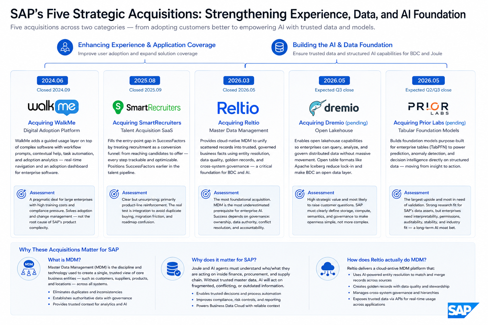

SAP 近两年的 5 笔收购与 10 类合作
它们共同指向一个目标——重建企业 AI 控制层
研究目的
这份时间线不是简单记录 SAP 买了谁、牵手了谁，而是观察它如何把企业软件竞争从"功能套件"推向"数据、流程和 AI 执行入口"的控制权之争。
研究结论
SAP 的主线不是追逐通用 AI 热点，而是把企业业务语义、可信数据、流程执行和用户入口串成一套可被 AI 调用的操作层。以下五条结论贯穿全文：
收购时间线
这五笔收购可以分成两类：WalkMe、SmartRecruiters 改善现有产品体验和应用覆盖；Reltio、Dremio、Prior Labs 则更接近 SAP AI 底座，决定 Business Data Cloud 与 Joule 能不能建立在可信数据和结构化 AI 能力之上。
收购 WalkMe
数字化采用平台WalkMe 指向 SAP 长期绕不开的一件事：企业买下软件，并不代表员工真的会用、愿意用，也不代表复杂流程会按标准方式执行。云迁移、Business Suite 升级和 Joule/agent 功能上线之后，客户最怕的不是"没有功能"，而是新功能继续停在培训材料和发布会上。
Digital Adoption Platform 的价值在于给复杂软件加一层可观察、可引导的使用层：流程提示、上下文帮助、任务自动化和使用行为分析。对非技术读者来说，可以把它理解成"企业软件里的实时导航和采用仪表盘"——既告诉员工下一步怎么做，也让管理者看到哪些流程真正被用起来。
收购 SmartRecruiters
人才获取 SaaSSmartRecruiters 补的是 SuccessFactors 的入口问题。HCM 套件擅长管理员工，但在员工加入公司之前，招聘营销、候选人体验、高频招聘和 AI 辅助筛选往往决定了企业能不能更快拿到人才。
它把招聘看成一个转化漏斗：从触达候选人、预筛、面试协同到录用，每一步都可以被追踪和优化。这样一来，SuccessFactors 不只是"员工系统"，而是更早介入人才获取链路。
收购 Reltio
主数据管理Reltio 是这轮收购里最"底层"的一笔。Joule 和 AI agent 想进入采购、财务、供应链这类核心流程，首先要知道自己面对的是哪个客户、哪个供应商、哪个产品。问题在于，大企业的数据往往分散在 SAP、CRM、本地系统和行业系统里，同一个对象可能有多个编号、名称和版本。
Reltio 做的是云原生主数据管理，通过实体解析、数据质量、golden record 和跨系统治理，把分散记录整理成企业可以共同相信的业务事实。对 BDC 来说，这比"多接几个数据源"更关键，因为 AI 需要的不只是更多数据，而是可信上下文。
拟收购 Dremio
开放数据湖仓Dremio 解决的是 BDC 的开放性问题。SAP 可以拥有最深的 ERP 语义，但客户的真实数据世界不会只在 SAP 里：CRM、数据湖、云数仓、制造系统、行业平台和第三方数据都会参与业务判断。
Dremio 的开放式 lakehouse 能力让企业在不大量复制和搬运数据的情况下查询、分析和治理分散数据。Apache Iceberg 这类开放表格式降低了数据被单一平台锁住的风险，也让 BDC 更像开放数据层，而不是另一个封闭仓库。
拟收购 Prior Labs
表格基础模型Prior Labs 把 SAP 的 AI 叙事从"会聊天的业务助手"推进到更核心的问题：企业最有价值的数据大多不是文本，而是财务、订单、库存、采购、人力这些结构化表格。通用大模型能解释文本，但未必擅长直接从表格里做预测、预警和决策建议。
Tabular Foundation Models 可以理解为"专门读企业表格的基础模型"。Prior Labs 的 TabPFN 方向面向分类、回归预测、异常识别和小样本学习，目标是在不做大量定制训练的情况下，对新的表格数据快速给出判断。放到 SAP 语境里，这意味着 ERP 不只是记录过去，也可能直接支持预测未来。

关键合作时间线
合作部分更像 SAP 的外部杠杆：有些补产品能力，有些补市场入口，有些补合规叙事，也有些是为了让客户迁移真的发生。
与 Databricks 合作
数据智能平台 · 极强Databricks 是 BDC 发布时最关键的背书之一。SAP 要讲的不再是"把 ERP 数据搬到云上"，而是让这些数据进入现代数据工程、机器学习和 AI 分析流程。没有 Databricks 这样的数据平台伙伴，BDC 很容易被看成 SAP 自己的数据仓库升级。
SAP Business Data Cloud 与 SAP Databricks 的组合，把 lakehouse、AI/ML 和数据工程能力嵌入 BDC，让 SAP 数据与非 SAP 数据可以在同一套分析和建模环境里被使用。对业务读者来说，重点是：SAP 想让自己的业务语义进入企业数据平台，而不是只待在 ERP 后台。
与 AWS 合作
云与生成式 AI · 极强AWS 合作更偏"让事情跑起来"。SAP 客户的云迁移和生成式 AI 试点，需要基础设施、模型服务、联合客户场景和实施路径，而 AWS 在企业云和 Amazon Bedrock 模型生态上都有现成入口。
AI Co-Innovation Program 的重点不是某个单点产品，而是围绕 SAP 数据、AWS 基础设施和客户业务场景一起做方案。它服务的是销售、迁移和场景共创，而不是直接定义 SAP 的核心 AI 差异化。
与 Microsoft 合作
Copilot 与 Teams · 极强Microsoft 合作回答的是入口问题。很多业务用户每天停留在 Outlook、Teams、Excel 和 Copilot 里，而不是 SAP 后台界面里。Joule 如果只能在 SAP 内部被唤起，使用频率和业务影响都会受限。
通过 SAP Business Suite Acceleration Program 以及 Joule 与 Microsoft 365 Copilot、Teams、Azure AI、BTP 的集成，SAP 试图让用户在熟悉的办公环境里查看业务数据、触发流程或调用业务动作。
与 Cohere 合作
企业级生成式 AI · 强Cohere 代表 SAP 的多模型策略。企业客户通常不会只押一个模型供应商，尤其在知识检索、摘要、问答和内部资料处理场景里，安全、部署方式、检索效果和成本都需要比较。
接入 SAP AI Core / Generative AI Hub 后，Cohere 可以作为企业级模型选项被 SAP 客户调用。RAG、embedding、rerank 可以简单理解为：先从企业知识库里找对材料，再让模型基于材料回答，并把最相关的信息排在前面。
与 Google Cloud 合作
BigQuery 与 AI · 极强Google Cloud 合作继续强化 BDC 的开放姿态。许多企业已经把 BigQuery 当作分析核心，如果 SAP 要让业务语义进入这些企业的数据工作流，就不能要求客户先把所有数据搬回 SAP。
SAP BDC Connect for Google BigQuery 的重点是双向 zero-copy 数据共享——尽量不做大规模数据复制，而是通过权限、元数据和连接机制让两边数据互相使用。Agent2Agent 则指向另一个问题：不同厂商的 AI agent 未来能不能协同，而不是各说各话。
与 NVIDIA 合作
推理与本地 AI · 极强NVIDIA 合作关注的是 AI 进入生产环境之后的现实问题：推理性能、成本、本地部署、主权云和大规模运行能力。演示一个 agent 不难，让它在大型企业里稳定、合规、可控地跑起来才难。
NVIDIA NIM、GPU 基础设施、本地 Business AI、Joule agents 和物理 AI 场景都服务于同一个目标：让 SAP 的 AI 能在更高性能、更可控的基础设施上运行，尤其面向制造、公共部门、金融等对部署边界敏感的客户。
与 OpenAI 合作
德国主权 AI · 极强OpenAI 合作在德国语境里不是单纯"接入最强模型"，而是把模型能力放进公共部门和受监管行业可以接受的交付框架里。德国和欧洲客户关心的不只是效果，还包括数据驻留、运营控制、合规责任和供应链可信度。
OpenAI for Germany 结合 SAP Sovereign Cloud，试图让顶级通用模型能力进入更符合德国/欧洲数据治理要求的环境。这里的"主权 AI"可以理解为：不仅模型能用，还要回答数据在哪里、谁运营、谁能访问、合规责任怎么界定。
与 Snowflake 合作
AI Data Cloud · 极强Snowflake 合作让 SAP 覆盖另一类重要数据客户。很多企业的数据团队已经围绕 Snowflake 建好了云数仓、权限、共享和分析流程，SAP 如果只绑定 Databricks，会天然丢掉一大批既有数据平台用户。
SAP Snowflake 与 BDC Connect for Snowflake 同样强调双向 zero-copy 数据共享，让 SAP 业务语义和 Snowflake 数据生态在尽量少复制数据的前提下连接起来。这背后是客户对"不要再制造一个数据孤岛"的明确要求。
与 Mistral AI 合作
欧洲主权模型 · 强Mistral AI 合作补的是欧洲模型选项。对德国、法国以及更广泛的欧洲客户来说，AI 供应链的地域属性和监管可解释性会影响采购决策，尤其在公共部门、金融、工业和关键基础设施场景里。
把Mistral 模型接入 SAP AI Core 和主权云相关场景，可以让 SAP 不只依赖美国模型公司，也能在欧洲市场讲出更完整的本土化和主权 AI 方案。
与 Palantir + Accenture 合作
AI 迁移工具 · 强Palantir + Accenture 合作把话题拉回 SAP 最现实的增长瓶颈：很多客户不是不理解云 ERP 和 AI 愿景，而是迁移太慢、太贵、风险太高，旧系统数据、定制代码和组织流程都卡在一起。
Palantir AIP 和 Accenture 实施能力的组合，目标是用 AI 辅助数据迁移、系统分析和项目执行，降低 S/4HANA 与 Cloud ERP 迁移难度。Palantir 强在复杂数据和 workflow，Accenture 强在大型企业实施，这个搭配很务实。
总体判断
SAP 这一轮动作的核心不是"多买几个 SaaS 产品"，而是把企业最难复制的资产重新包装成 AI 时代的控制层：业务流程、主数据、交易数据、行业语义和执行入口。Reltio、Dremio、Prior Labs 是更接近底座的下注；WalkMe 和 SmartRecruiters 则分别解决采用和应用覆盖问题。前者决定 SAP 的 AI 能不能可信地理解企业，后者决定客户能不能更快看到可用价值。
| 来源 | 用途 | 评价 |
|---|---|---|
| SAP 官方新闻中心 | 收购与合作公告 | ★★★★★ 官方一手信息 |
| 各公司收购/合作公告（WalkMe、SmartRecruiters、Reltio、Dremio、Prior Labs 等） | 交易细节与时间线 | ★★★★★ 官方发布（部分交易待监管批准） |
| Databricks、Snowflake、Google Cloud、NVIDIA、OpenAI、Mistral、Cohere、Palantir 合作公告 | 合作性质与技术内容 | ★★★★★ 各方官方新闻 |
| SAP Business Data Cloud 产品页 | BDC 架构与合作伙伴定位 | ★★★★☆ 官方产品材料 |
| 公开行业报告（Gartner、IDC 等） | 市场位置与竞争格局参考 | ★★★☆☆ 方向性参考，非精确份额数据 |